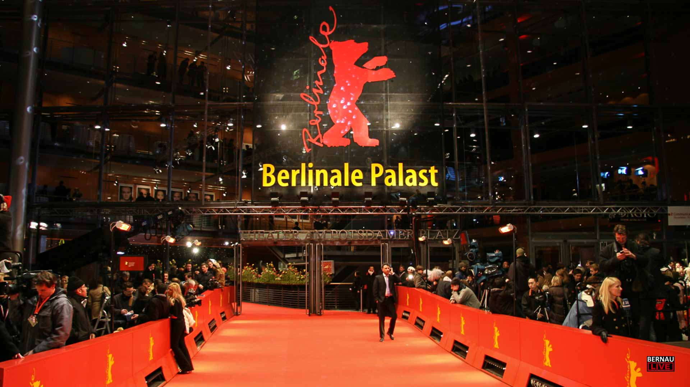

For many, the Oscars are the only major award ceremony that takes place each year to celebrate great films, but there are numerous other awards ceremonies both within the United States and around the world.
Are you one of those people who eagerly await Oscar night? Get ready to discover a universe of awards ceremonies that go beyond the famous golden statue.
In this guide, we'll introduce you to the ceremonies that shake up the world of cinema and that can influence your favorite films.
1 - The Palme D'OR - Cannes Film Festival - France
In the wake of the successful Venice Film Festival, established in 1932 as a showcase for the fascist regime in Italy, the French government decided in 1938 to have its own International Free Film Festival. It was the film critic Philippe Earlenger who shaped the French event, which was scheduled to take place on September 1st, 1939, under the presidency of Louis Lumière. With the invasion of Poland by German troops, the festival was canceled and only took place on September 20, 1946, at the end of World War II.
Several cities offered to host the event, such as Aix-Les-Bains, Vichy, and Biarritz, which now has its own festival. Even the capital of Algeria, Algiers, still under French rule, applied. Cannes was the chosen one. Just as the symbols and coats of arms of the host cities of other festivals lent their shapes to the trophy, such as the Berlin Bear and the Venice Lion, the coastal city saw its Golden Palm (Palme d'Or) translated into gold for the award. However, the Golden Palm was only awarded to the winning film of the Festival for the first time in 1955. In 1962, the Brazilian film received this honor with the film 'O Pagador de Promessas', by director Anselmo Duarte.
Another hallmark of this festival is its famous red carpet, 60 meters long, totaling 7,000 square meters, and covering the 24 steps of the Palais des Festivals.
2 - Mostra Internazionale d'Arte Cinematografica della Biennale di Venezia - Italy
This is the oldest film festival in the world, which began its journey linked to the Venice Biennale in 1932. Between 1934 and 1942, the award given was called the Coppa Mussolini (and the festival served as a showcase for the fascist regime in power in the country until the end of World War II). As the event was not held between 1943 and 1945, upon its return in 1946, the winning films took home the Grand International Prize of Venice.
In 1949, the Golden Lion trophy emerged, reproducing the city's symbol, the winged lion. This mythological figure represents Saint Mark, the navigator evangelist who became the patron saint of the city whose name now baptizes the most famous square in Venice. He was traveling from Aquileia to Rome when, on a stop in the Venice Lagoon, an angel in the form of a winged lion appeared to him, uttering the words 'Pax tibi Marce, evangelista meus, hic requiescat corpus tuum' - 'Peace be with you, Mark, my evangelist, here rest your body'. These words appear in the book under one of the lion's paws.
3 - Internationale Filmfestspiele Berlin - Germany
Founded in 1951, as an initiative of the then US occupation government, which 'divided' the city with the Russians, it has become a very diverse festival, with representatives from virtually every corner of the world.
Like other festivals, the city's symbol also shapes the trophy: and so we have the Golden Bear (Gildener Bär) and also the Silver Bear (Silberner Bär), which awards various categories, such as best actress, actor, screenplay and the "Special Jury Prize", which honors what is considered the "second best film of the festival".
Brazil received its first Golden Bear in 1998, with Central do Brasil (when Fernanda Montenegro also won the Silver Bear for best actress for the same film), repeating the feat in 2008, with the controversial award of Tropa de Elite, which divided opinions.

4 - BAFTA Film Awards - United Kingdom
Although often associated with the United States due to the high number of Hollywood nominees, the BAFTA (British Academy of Film and Television Arts) celebrates British and international cinema. Established in 1947, the awards are highly respected, with categories spanning acting, directing, and technical achievements in filmmaking.
5 - Asia Pacific Screen Awards - Australia
The Asia Pacific Screen Awards (APSA) celebrate the cinema of the Asia-Pacific region, one of the most diverse and dynamic areas in the global film scene. Founded in 2007, the awards recognize films that reflect the unique cultures and stories of the region, promoting dialogue between different nations and cinematic traditions.
6 - Goya Awards - Spain
Established in 1987, the Goya Awards are the most prestigious film awards in Spain. Organized by the Spanish Academy of Cinematic Arts and Sciences, the event honors the best of Spanish cinematography and also recognizes Spanish-language productions from other countries.
7 - Ariel Awards - Mexico
Established in 1987, the Goya Awards are the most prestigious film awards in Spain. Organized by the Spanish Academy of Cinematic Arts and Sciences, the event honors the best of Spanish cinematography and also recognizes Spanish-language productions from other countries.
8 - César Awards - France
Known as the "French Oscars," the César Awards are France's premier film awards. Established in 1976, they recognize the best talents in French cinema while also honoring international co-productions. The ceremony is renowned for its elegance and highlights the cultural impact of French cinema worldwide.